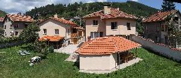
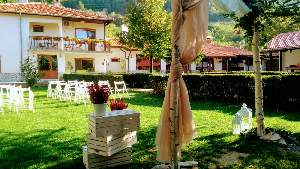
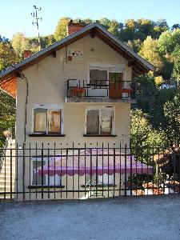
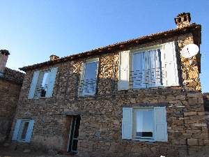
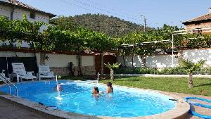
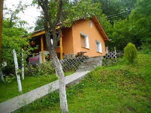

|  | Двете къщи се намират в с. Искрец, на 50 км. от София и на 10 км. от Своге. Намират се в голям зелен двор - 1.7 декара, където има достатъчно място и за паркиране. Къщите са след основен ремонт и са модерно оборудвани с нови мебели, LCD телевизори, климатици и кухненско оборудване.
Къща 1 На първия етаж на къща има голямо помещение, в което са поместени кухненско бокс, трапезария с камина и хол. На етажа има и баня с тоалетна. На втория етаж се намира апартамент - спалня и хол с разтегателен диван, голяма стая с 2 легла и по-малка стая с 2 ъглови кревата. На този етаж също има баня с тоалетна. Къща 2 Общото помещение в къщата е обзаведено в битова стил, също разполага с кухня, трапезария и всекидневна с камина. Освен това има и 2 стаи с по 2 легла на етажа. Разположението на втория етаж е същото като на къща 1 - апартамент и 2 стаи с по 2 легла. |
||
|  | Къща за гости Марияна се намира в град Твърдица, на 60 км.от Стара Загора на 40 км. от Сливен. Ще бъдете посрещнати на място в което тишината и спокойствието ще помогнат за Вашата приятна почивка, а полъха на реката, която минава съвсем близо до къщата ще направи ваканцията Ви още по-прекрасна. На разположение на гостите са 2 къщи, предоставящи общо 20+3 места за настаняване. * Къща 1 предлага четири тройни и една двойна стая, всяка със собствен санитарен възел, кабелна тв, Wi-Fi, климатик и локално отопление. * Къща 2 предлага три двойни стаи, всяка със собствен санитарен възел, кабелна тв, Wi-Fi и кухня. * Къща 1 предлага 14 места за настаняване. * Къща 2 - 6 места. | ||
|  | Къща "Боровец" се намира в Шипково - Минерални бани, на 18км. от гр. Троян, в сърцето на Стара планина. Къщата се намира на 100м. от центъра на курорта, на 200м. от басейн с минерална вода. Има трапезария оборудвана за самостоятелно приготвяне на храна, барбекю. В двора на къщата има 500кв. м. тревна площ, вековна орехова сянка, на която може да се насладите през горещите летни дни. Точно до къщата минава река, извираща от подножието на връх Васильов, която Ви зарежда с енергията на Балкана. В двора на къщата има места за отдих, детски кът, кът в реката. Къщата работи целогодишно, отоплението през студените дни е локално парно поддържано от стопанина. Приемаме гости с домашни любимци. Къщата приема както индивидуални туристи, така и групи. | ||
|  | Страноприемница Гнездото е самостоятелна къща за гости, която се намира в село Вишнево, на 4 километра от балнео курорта Баните. Основна характеристика на минералната вода, която е силициева, флуорна, сулфатно-хидрокарбонатна, натриево-калиева, хипертермална (42.8°) с леко алкално (Ph 7.2).Къщата е старинна, изцяло реновирана , архитектирата и е традиционна за местния регион. Къщата е на два етажа, като помещенията в нея са разпределени на два етажа: 1 етаж - представлява едно цяло голямо помещение, в което има - напълно оборудвана кухня и трапезария с камина и голяма маса с място за 10 човека, една баня с тоалетна и спално помещение за двама , разполага с голямо двойно легло. * 2 етаж - тук е входа на къщата, като по вътрешна стълба се стига до първия етаж. На втория етаж има две големи стаи, всяка от тях е подходяща за 4 човека. В едната стая има две двойни спални , а във втората стая има една двойна спалня и едно легло персон и половина. Капацитетът на къщата е от 6 до 10 човека и това зависи от компанията. | ||
|  | Уникална комбинация между лукс, съвременни удобства и старинен стил. Къщата е разположена в подножието на Пирин в гр. Кресна отличаващ се с уникалния си въздух. Имотът се намира на 25 км от гр. Сандански, на 37 км от местността Рупите, на 42км от Мелник. Района е известен рафтинга по р. Струма. * На първия етаж са разположени напълно оборудвана кухня и механa. * На втория етаж са трите спални и банята с тоалетна. Дворът е просторен с тревни площи, цветя, дървета и културни насаждения. На двора има изграден навес и барбекю с пещ, където можете да приготвите ястия по ваш вкус, както и оборудвана външна кухня. Къщата разполага със собствен басейн, който работи от 15 май до 15 октомври. В двора има обособено място за паркиране на две коли. Заповядайте! | ||
|  | Семейна къща в борова гора, само на 20 км. от София. Идеална за уединение и пълноценна почивка. Разположена е в сърцето на искърското дефиле. Мястото е идеално за откъсване от забързания начин на живот в градските условия. Подходящо за рожденни дни партита туризъм през всички сезони. В нашия малък рай вие ще откриете очарованието на чистия планински въздух и мек климат, спокойствие, уют, хармония и свобода. Няма по хубаво място за зареждане силите ви чрез действието на прекрасната природа. Тук мечтите се сбъдват. През последните години, тук се изградиха еко пътеки и други туристически маршрути. Красотата на природата ще ви омагьоса. Къщата разполага с 8 до 10 места за нощувка. Има напълно оборудванa кухня, подходяща за самостоятелно приготвяне на храна. Има баня с тоалетна, телевизор. Има тераса с навес, барбекю и беседка за топлите месеци. Прекрасно уютно място за различни компании. Има допълнителни легла. Заповядайте! | ||